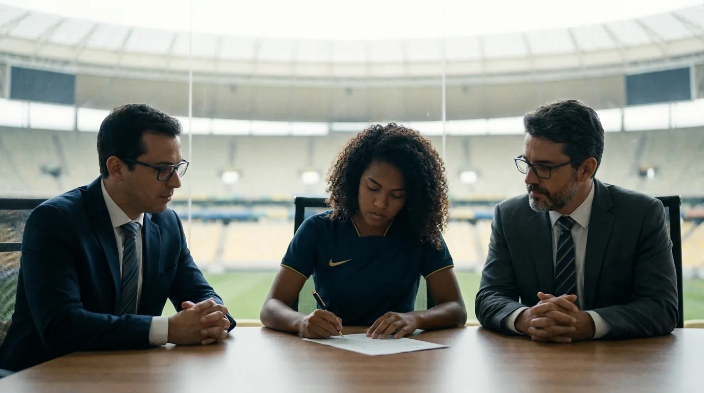
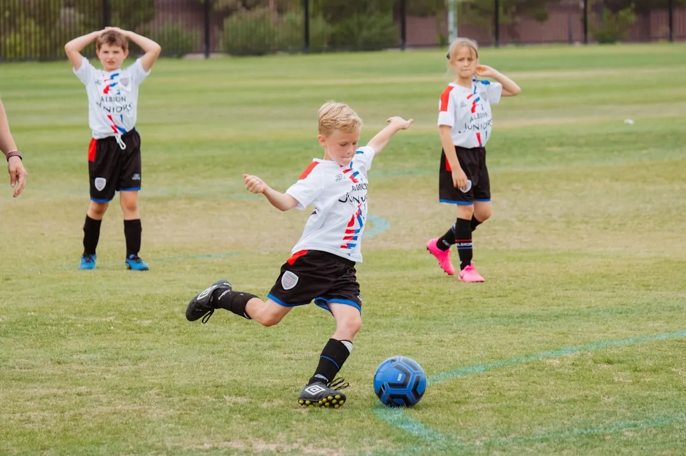

Contrato de Atleta Profissional: Cláusulas e Cuidados

A assinatura de um contrato de atleta costuma ser um momento de festa. O jovem realiza um sonho, a família comemora e o clube apresenta o reforço nas redes sociais. Poucas pessoas, porém, leem com atenção o documento que acabou de ser assinado.
Esse descuido cobra um preço alto. O contrato de atleta profissional define salário, tempo de vínculo, multas, direito de imagem e condições de transferência. Uma cláusula mal redigida pode prender o jogador a um projeto ruim ou deixá-lo sem proteção quando o clube atrasa pagamentos.
Este guia explica como funciona o contrato especial de trabalho desportivo no Brasil. Você vai entender o que dizem a Lei Pelé e a Lei Geral do Esporte, quem paga cada multa, como estruturar o direito de imagem e quais erros aparecem com mais frequência na prática.
O conteúdo serve para o atleta que vai assinar o primeiro vínculo profissional, para pais de atletas de base e também para empresários e dirigentes que negociam contratos todos os dias.
O que é o contrato especial de trabalho desportivo
O vínculo entre atleta profissional e clube não segue o modelo comum de emprego. A Lei Pelé (Lei 9.615/1998) criou regras próprias para essa relação e deu a ela um nome específico: contrato especial de trabalho desportivo. A Lei Geral do Esporte (Lei 14.597/2023) também disciplina o tema, e as duas leis convivem.
Na prática, trata-se de um contrato de trabalho com características que só existem no esporte. A lei reconhece que a carreira do atleta é curta, que o desempenho físico varia e que as transferências entre clubes movimentam valores relevantes. Por isso, o legislador criou um regime híbrido, que combina proteção trabalhista com regras típicas do mercado esportivo.
Esse modelo tem apoio na própria Constituição da República, que garante às entidades esportivas autonomia quanto a sua organização e funcionamento, no artigo 217. É essa autonomia que legitima os regulamentos próprios da CBF e das federações, citados ao longo deste guia como fonte de regras que o contrato de atleta precisa respeitar.
Forma escrita e registro obrigatório
O contrato especial de trabalho desportivo exige forma escrita. Não existe vínculo profissional válido firmado apenas de boca, por áudio ou por troca de mensagens. O documento precisa indicar prazo determinado, remuneração e as cláusulas indenizatória e compensatória, que veremos adiante.
Também é obrigatório o registro na entidade que administra a modalidade. No futebol, esse papel cabe à CBF (Confederação Brasileira de Futebol), que mantém o registro nacional dos contratos. Sem esse registro, o atleta não fica apto a disputar as competições oficiais e o clube se expõe a questionamentos sobre a validade do vínculo.
Parece só burocracia, mas a consequência prática é séria. Um contrato assinado e não registrado pode gerar disputa sobre a própria existência da relação profissional. Quem confere o registro antes de estrear evita esse tipo de surpresa.
Diferenças para um contrato CLT comum
Muita gente acredita que o atleta é um empregado como outro qualquer. A comparação ajuda a entender por que essa ideia está errada. A CLT (Consolidação das Leis do Trabalho) continua valendo naquilo que a legislação do esporte não regula de forma diferente, mas o regime desportivo altera pontos centrais do vínculo.
| Aspecto | Contrato CLT comum | Contrato especial de trabalho desportivo |
|---|---|---|
| Prazo | Regra geral por prazo indeterminado | Sempre por prazo determinado, com limites mínimo e máximo definidos em lei |
| Forma | Pode ser verbal em algumas situações | Obrigatoriamente escrito |
| Registro | Anotação na carteira de trabalho | Registro também na entidade que administra a modalidade |
| Multa por saída | Regras gerais da CLT | Cláusula indenizatória desportiva negociada entre as partes |
| Rescisão pelo empregador | Aviso prévio e verbas da CLT | Cláusula compensatória desportiva devida ao atleta |
| Jornada | Controle clássico de horário | Rotina adaptada a treinos, viagens, concentração e jogos |
O contrato de atleta é, portanto, um documento técnico, que mistura direito do trabalho, direito civil e regulamentos esportivos nacionais e internacionais. A leitura apressada, sem apoio especializado, costuma deixar passar exatamente os pontos que decidem conflitos futuros. Quem quer se aprofundar nos fundamentos dessa área pode começar pelas noções gerais de direito desportivo.
As cláusulas que definem o jogo: indenizatória, compensatória e luvas
Se existe um trecho do contrato de atleta que merece leitura em dobro, é o das cláusulas financeiras de saída. Elas determinam quanto custa romper o vínculo e quem recebe esse valor. São elas que definem o poder de negociação de cada lado durante toda a vigência do contrato.
Cláusula indenizatória desportiva: proteção do clube
A cláusula indenizatória desportiva protege o investimento do clube. Ela é devida quando o atleta se transfere para outro clube na vigência do contrato ou quando, após romper o vínculo, retorna à atividade profissional por outro clube em até 30 meses. Nesses casos, o clube de destino ou o próprio jogador paga o valor fixado ao clube de origem.
O montante é negociado livremente dentro de limites definidos em lei, que variam conforme a transferência seja nacional ou internacional. Um valor alto demais pode travar a carreira do atleta, porque afasta interessados. Um valor baixo demais enfraquece o clube, que perde o jogador sem compensação adequada.
Essa cláusula não é item de preenchimento automático. Ela precisa refletir o momento da carreira, a projeção do atleta e a realidade do mercado em que o clube atua.
Cláusula compensatória desportiva: proteção do atleta
Do outro lado está a cláusula compensatória desportiva, devida ao atleta quando o clube dá causa ao fim do contrato. Isso ocorre, por exemplo, quando a equipe atrasa salários de forma reiterada ou dispensa o jogador sem justa causa antes do prazo final.
Aqui também há limites definidos em lei para o valor, que guarda relação com a remuneração e com o tempo restante de contrato. Se o clube quebra o compromisso, o atleta recebe uma compensação para atravessar o período sem vínculo.
| Cláusula | Quem paga | Quando é devida | Quem recebe |
|---|---|---|---|
| Indenizatória desportiva | Atleta ou clube interessado na transferência | Transferência na vigência do contrato ou retorno à atividade por outro clube em até 30 meses após o rompimento | Clube de origem |
| Compensatória desportiva | Clube empregador | Rescisão causada pelo clube, como dispensa imotivada ou inadimplência | Atleta |
Atenção: contrato sem cláusula compensatória clara, ou com valor irrisório, deixa o atleta desprotegido justamente na situação em que ele mais precisa de amparo. Confira esse ponto antes da assinatura, porque depois a margem de correção é pequena.
Luvas: o prêmio pela assinatura
As luvas são o valor pago ao atleta pelo simples fato de assinar ou renovar o contrato. Funcionam como um prêmio de contratação, negociado à parte do salário mensal. Clubes usam as luvas para convencer o jogador a aceitar o projeto. Para o atleta, o valor de luvas oferecido em propostas concorrentes serve de referência do seu valor de mercado na hora de negociar.
O detalhe relevante está na forma de pagamento. Luvas parceladas ao longo do contrato geram discussões quando o vínculo termina antes do previsto. O contrato deve dizer, com clareza, o que acontece com as parcelas restantes em cada cenário de rescisão.
Se você está negociando um contrato agora e ficou em dúvida sobre qualquer uma dessas cláusulas, esse é o momento certo de buscar orientação. A Mussi Advocacia & Consultoria, escritório com base em Florianópolis, atende atletas, famílias, empresários e clubes de todo o Brasil na análise e na negociação de contratos desportivos.
Direito de imagem: contrato separado e o risco de virar salário disfarçado
Poucos temas geram tantas disputas judiciais no esporte quanto o direito de imagem. A imagem do atleta tem valor comercial próprio: aparece em transmissões, campanhas publicitárias, jogos eletrônicos, camisas e ações de patrocinadores.
A lei permite que esse uso seja remunerado por meio de um contrato civil, assinado separadamente do contrato de trabalho. Ou seja, o atleta pode receber duas parcelas distintas: o salário, de natureza trabalhista, e a remuneração pela cessão de imagem, de natureza civil.
Quando a imagem vira salário disfarçado
O problema surge quando o contrato de imagem serve apenas para reduzir os impostos e contribuições que incidem sobre o salário. Se o valor pago como imagem não corresponde a uma exploração comercial real, a Justiça do Trabalho pode entender que aquela parcela era salário disfarçado.
As consequências dessa descaracterização são pesadas. Os valores passam a integrar a remuneração para todos os efeitos: o valor passa a contar no cálculo de férias, décimo terceiro e dos demais pagamentos trabalhistas, além de gerar encargos retroativos. O clube recebe uma conta inesperada para pagar, e o atleta se envolve em litígio longo e desgastante.
A lei ainda estabelece um limite para essa parcela, fixado como fração da remuneração total do atleta. Contratos que ultrapassam esse limite, ou que não demonstram uso efetivo da imagem, acendem alerta imediato em qualquer auditoria.
Atenção: receber parte relevante da remuneração como direito de imagem sem contrato civil bem estruturado é um dos erros mais comuns e mais caros do mercado esportivo brasileiro. O que parece economia de encargos agora pode virar condenação na Justiça do Trabalho.
Um contrato de imagem bem feito descreve quais usos estão autorizados, por qual prazo, em quais territórios e por qual valor. Também deve prever o que acontece com a cessão quando o vínculo de trabalho termina. Sem essas definições, o documento vira apenas uma folha a mais na pasta do departamento financeiro.
Atleta em formação e de base: cuidados antes do primeiro vínculo

A vida contratual de um jogador começa muito antes do profissionalismo. Nas categorias de base, o clube formador investe em alojamento, escola, alimentação, transporte e comissão técnica. A legislação reconhece esse investimento e cria instrumentos para protegê-lo.
O contrato de formação desportiva
O principal desses instrumentos é o contrato de formação. Ele formaliza a relação entre o clube formador e o atleta em desenvolvimento, sem criar vínculo empregatício imediato. Em troca do programa de formação, o clube garante prioridade para assinar o primeiro contrato especial de trabalho desportivo quando o atleta completa 16 anos, a idade mínima legal para o vínculo profissional.
Esse documento precisa detalhar as obrigações do clube: matrícula escolar, acompanhamento médico e psicológico, condições de alojamento e carga de treinos compatível com a idade. Clube que não cumpre o programa de formação perde a proteção que a lei oferece.
Direitos do clube formador
Quando o atleta formado se profissionaliza em outra equipe, o clube que o desenvolveu tem direito a uma compensação pela formação, nas condições definidas em lei e nos regulamentos da modalidade. Esse mecanismo existe para estimular o investimento na base e alcança também transferências futuras, conforme as regras aplicáveis a cada caso.
Para o atleta e sua família, isso significa que a saída de um clube formador nunca é um simples "pegar as chuteiras e ir embora". Há valores, prazos e procedimentos envolvidos. Ignorar essas regras pode gerar cobranças e até impedir a regularização do jogador na nova equipe.
O papel dos pais e o risco de assinar cedo demais
Enquanto o atleta é menor de idade, os responsáveis assinam ou autorizam os documentos. Essa responsabilidade exige atenção redobrada. Promessas verbais de empresários, cessões de percentuais de direitos econômicos (a fatia do valor de uma futura transferência do atleta que alguém passa a ter direito de receber) e procurações amplas assinadas na euforia de uma proposta costumam gerar arrependimento anos depois.
Atenção: nenhum documento envolvendo atleta de base deveria ser assinado no vestiário, no estacionamento ou sob pressão de prazo. Peça cópia, leia com calma e busque orientação antes de devolver o papel assinado.
A pressa em profissionalizar o jovem também pode custar caro. Um contrato de atleta assinado cedo demais, com cláusula indenizatória mal dimensionada, pode prender o jogador a condições ruins na fase mais decisiva de desenvolvimento. Cada assinatura na base deve considerar o projeto esportivo, e não apenas o valor imediato oferecido.
Pais que acompanham filhos nessa fase se beneficiam de uma conversa franca com um advogado desportivo antes de qualquer assinatura. A Mussi Advocacia & Consultoria orienta famílias de atletas de base em todo o Brasil, sempre com foco em proteger a carreira que está começando.
Erros comuns no contrato de atleta e quando o advogado deve revisar
Quem analisa vínculos esportivos há anos vê os mesmos erros se repetirem em contratos de todos os níveis, do clube amador ao futebol de elite. Conhecer esses padrões ajuda o atleta a saber o que olhar primeiro.
Os erros que mais aparecem na prática
O primeiro erro clássico é a multa desproporcional. Cláusulas indenizatórias infladas transformam o atleta em refém do clube, enquanto valores simbólicos deixam o clube sem proteção. Nos dois casos, alguém assinou sem calcular o efeito prático do número.
O segundo é o direito de imagem mal estruturado, como vimos acima. O terceiro envolve renovações automáticas: cláusulas que prorrogam o vínculo por longos períodos mediante simples notificação do clube, sem reajuste ou sem opção real de saída para o jogador.
Também aparecem com frequência prazos incompatíveis com a lei, promessas de premiação sem critério objetivo, descontos não autorizados sobre o salário e omissão sobre o pagamento das luvas em caso de rescisão antecipada. Cada um desses pontos, isoladamente, já justificaria uma revisão profissional.
Os quatro momentos em que a revisão é indispensável
Um advogado desportivo deve entrar em cena, no mínimo, em quatro situações. Antes da assinatura, para negociar cláusulas enquanto ainda há margem de mudança. Na renovação, porque o novo contrato raramente deve repetir o anterior: o atleta amadureceu, o mercado mudou e as multas precisam ser recalculadas.
Na transferência, a revisão confirma quem recebe a cláusula indenizatória, como ficam os percentuais de direitos econômicos e o que acontece com valores pendentes. Por fim, na rescisão, o advogado verifica se há justa causa desportiva (uma falta grave, do clube ou do atleta, que autoriza encerrar o contrato antes do prazo), calcula a cláusula compensatória e formaliza a saída sem deixar pendências que travem o registro em outro clube.
Como a revisão técnica trabalha o contrato
A revisão profissional não se limita a apontar os erros listados acima. O método é ler o documento cláusula por cláusula, simular os cenários de saída (transferência, rescisão pelo clube, rescisão pelo atleta) e conferir cada valor contra a legislação desportiva, os regulamentos da modalidade e a prática do mercado.
O resultado é poder de negociação. O atleta que entende o próprio contrato conversa de igual para igual com clube e empresário, sabe o que pedir e o que recusar. Sobre esse tema, vale a leitura do nosso conteúdo a respeito da importância da assessoria jurídica nas atividades esportivas.
Antes de assinar: o que merece a sua atenção
O contrato de atleta concentra em poucas páginas decisões que acompanham o jogador por anos. As cláusulas indenizatória e compensatória definem o custo e a proteção de cada saída. O direito de imagem precisa de contrato civil verdadeiro para não virar salário disfarçado. Na base, cada assinatura dos responsáveis molda a carreira que está começando.
Nenhum desses pontos exige decorar a lei. Exige o hábito de ler com calma e de buscar revisão profissional nos quatro momentos decisivos: primeira assinatura, renovação, transferência e rescisão.
Se você vai assinar, renovar ou encerrar um contrato de atleta nas próximas semanas, não deixe a análise para depois. Fale com a Mussi Advocacia & Consultoria: de Florianópolis, o escritório atende atletas, pais, empresários e clubes de todo o Brasil, com atuação dedicada ao direito desportivo.
Perguntas frequentes sobre contrato de atleta
O que é o contrato especial de trabalho desportivo?
É o contrato de trabalho próprio do atleta profissional, previsto na Lei Pelé (Lei 9.615/1998) e também disciplinado pela Lei Geral do Esporte (Lei 14.597/2023). Ele exige forma escrita, prazo determinado e registro na entidade que administra a modalidade, como a CBF no futebol, e combina regras trabalhistas com regras específicas do esporte.
Qual a diferença entre cláusula indenizatória e cláusula compensatória?
A cláusula indenizatória desportiva é devida ao clube de origem quando o atleta se transfere para outro clube na vigência do contrato ou quando, depois de romper o vínculo, volta a atuar profissionalmente por outra equipe em até 30 meses. A cláusula compensatória desportiva é devida ao atleta quando o clube dá causa ao fim do vínculo, como na dispensa sem justa causa ou no atraso reiterado de salários.
O direito de imagem pode ser pago separado do salário?
Sim. A lei permite contrato civil de cessão de imagem, com remuneração separada do salário e limitada a uma fração da remuneração total do atleta. Se o valor não corresponder a uso comercial real da imagem, a Justiça pode reconhecer a parcela como salário disfarçado, com encargos retroativos.
O que são luvas no contrato de atleta?
Luvas são o valor pago ao atleta como prêmio pela assinatura ou pela renovação do contrato, negociado à parte do salário mensal. O contrato deve indicar a forma de pagamento e o destino das parcelas restantes caso o vínculo termine antes do prazo.
Atleta menor de idade pode assinar contrato profissional?
O contrato especial de trabalho desportivo só pode ser firmado a partir da idade mínima definida em lei. Antes disso, o vínculo com o clube ocorre pelo contrato de formação, sem natureza empregatícia, sempre com participação dos pais ou responsáveis nas assinaturas e autorizações.
Quando devo procurar um advogado desportivo?
Nos quatro momentos decisivos da carreira: antes de assinar o primeiro contrato, na renovação, na transferência e na rescisão. A revisão técnica identifica multas desproporcionais, direito de imagem mal estruturado e cláusulas de renovação automática prejudiciais ao atleta.